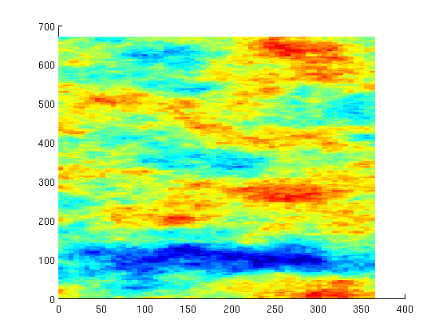

Contents
Simulate a large example using parts of SPE10
This example is a larger example demonstrating the solver on a medium size grid (66000 cells) with a relatively large amount of time steps (100). This example will take some time, especially if mldivide is used as the elliptic solver. Be vary that increasing the number of layers may let the simulations take a very long time.
mrstModule add ad-fi deckformat spe10 % Read and process file. current_dir = fileparts(mfilename('fullpath')); fn = fullfile(current_dir, 'SPE10-S3.DATA.txt'); deck = readEclipseDeck(fn); % The deck is given in field units, MRST uses metric. deck = convertDeckUnits(deck); % Create a special ADI fluid which can produce differentiated fluid % properties. fluid = initDeckADIFluid(deck); % The case includes gravity gravity on % The initial state is provided as a binary file. The initial state % contains a uniform mixture of water (.12) and oil (.88). % load initialState;
Set up permeability, grid and wells
We will simulate on the top 5 layers.
layers = 1:5; [G, W, rock] = SPE10_setup(layers); % SPE10 contains zero and extremely low porosities. For the purpose of this % tutorial, we will mask away these values. An alternative would be to set % these cells to inactive by using extractSubgrid and removing the % corresponding cells. low = 1e-4; rock.poro(rock.poro < low) = low;
Plot the permeability
clf; plotCellData(G, log10(rock.perm(:,1)));
Set up solution structures.
% The initial reservoir is at 6000 psi and is fully oil saturated. The well % solution gets its initial pressure from the bottom hole pressure values % provided. initSat = [0 1 0]; state0 = initResSol(G, 6000*psia, initSat); state0.wellSol = initWellSolLocal(W, 6000*psia); for i = 1:numel(W) state0.wellSol(i).pressure = W(i).val; % Set well sign if strcmpi(W(i).name(1), 'p') W(i).sign = -1; else W(i).sign = 1; end end % Set up a Water / Oil system using CPR preconditioner. Alternatively we % could have used a specialized elliptic solver using the option 'cprEllipticSolver' % to exploit the nature of the variables involving pressure. system = initADISystem({'Water', 'Oil'}, G, rock, fluid, 'cpr', true, 'cprRelTol', 2e-2); % If an alternative solver for the pressure subproblem was installed, it % could be added using % % system.nonlinear.cprEllipticSolver = @(A,b) solver(A,b) % % This can greatly speed up the solution process, as the default option % uses MATLABs direct solver @mldivide which is very expensive for a % preconditioner.
Simulate 1000 days of production and save iteration count and time
We provide the solver with time steps for roughly 1000 days of production. A few smaller steps are done to get better accuracy during the initial injection period. After this we do 10 day intervals to step rapidly through the schedule. While this converges at every time step, implicit solvers will still get improved accuracy by doing smaller time steps. Numerical diffusion can, for instance, be problematic when doing large time steps.
dt = [.001*day; .1*day*ones(5,1); 1*day*ones(10,1); 10*day*ones(100,1)]; nstep = numel(dt); states = cell(nstep,1); its = zeros(nstep,1); time = zeros(nstep,1); state = state0; for t = 1 : nstep timer = tic(); [state, it] = solvefiADI(state, dt(t), W, G, system); states{t} = state; its(t) = it; time(t) = toc(timer); end
Warning: Non-linear solver did not converge, stopped by max iterations...
Plot the solution
for i = 1:numel(states) clf; data = states{i}.s(:,1); plotGrid(G, data > 0, 'facea', .3, 'facec', 'red', 'edgea', 0); % Uncomment for slower, but prettier volume plotting % plotGridVolumes(G, data); plotWell(G, W); plotGrid(G, 'facea', 0, 'edgea', .05); view(-60, 70); axis tight off title(['Water front after ' formatTimeRange(sum(dt(1:i)))]) pause(.1) end
Plot the time taken and number of iterations
clf;
plot([time, its]);
legend({'Time (s)', 'Iterations'})
xlabel('Step #')
title('Time and iteration count')